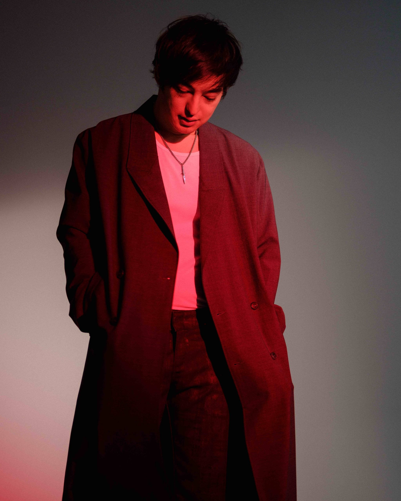

George Kusunoki Miller (ジョージ・楠木・ミラー, Jōji Kusunoki Mirā, born 18 September 1992),[2] known professionally as Joji and formerly for playing the characters Filthy Frank and Pink Guy, is a Japanese singer-songwriter, rapper, former comedian, and YouTuber. Miller's music has been described as a mix between R&B, lo-fi, and trip hop.

Joji started the viral dance craze known as the Harlem Shake in 2013.
Joji began his music journey back in 2008 after he was inspired by Lil Wayne's hit, "A Milli." He started to learn how to use Garage band where he attempted to recreate the beat.
All of Joji's Youtube chanel subscribers combined is 11.2 million.